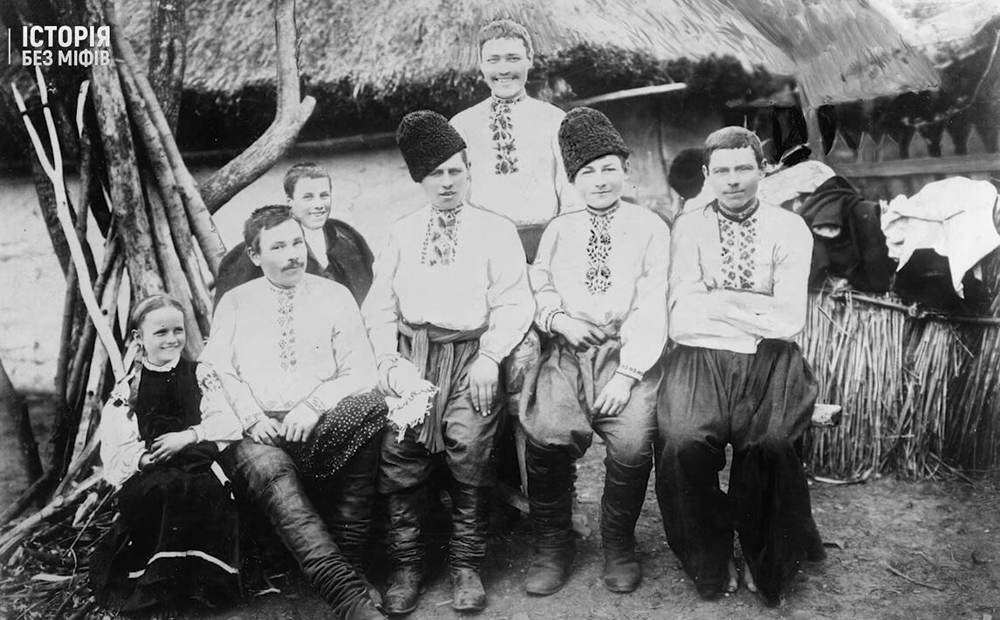
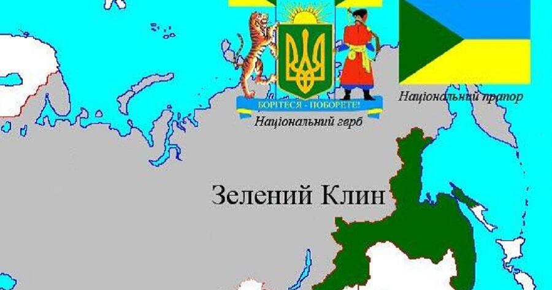
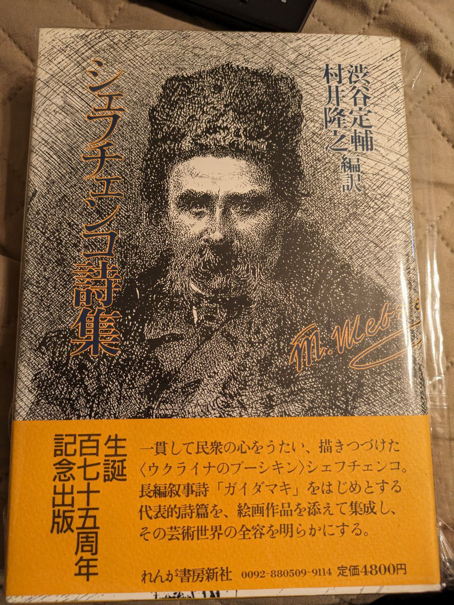

Зміст
Боротьба за українську державність на Далекому Сході

З кінця ХІХ століття українці почали активно заселяти Далекий Схід Російської імперії, у тому числі землі навколо Китайсько-Східної залізниці і прикордонні території в Маньчжурії.
В 1917 році українців було в Приморському краї 80% від всього населення, в Амурській області і Хабаровському краї – 60%. Український Далекий Схід почали називати Зеленим Клином.
З 1918 року по 1922 рік серед далекосхідної української громади тривали державотворчі процеси.
Крайовий секретаріат Зеленого Клину (уряд) і Далекосхідна Рада активно боролися за створення незалежної української держави від озера Байкал і до Тихого океану.
В обласних містах (у тому числі і в Маньчжурії) були створені окружні ради, які відстоювали інтереси місцевих українців.Після анексії Радянською Росією багатонаціональної Далекосхідної республіки (незалежної в 1920–1922 роках держави) і репресій українських діячів Зеленого Клину центром політичної боротьби за інтереси українців стала маньчжурська Окружна Рада в Харбіні (територія Китаю) на чолі з Петром Твердовським.
У 1920-ті роки українська політична діяльність в Харбіні мала в основному культурно-просвітницький характер: діяли українські школи, театр, клуби, бібліотеки, видавалися газети і журнал, відзначалися значущі для українців дати.
У 1920-ті роки українська політична діяльність в Харбіні мала в основному культурно-просвітницький характер: діяли українські школи, театр, клуби, бібліотеки, видавалися газети і журнал, відзначалися значущі для українців дати.
Про український збройний опір радвладі на Далекому Сході, як це робили уссурійські козаки і білі емігранти, не йшлося. До 1932 року в Далекосхідному краї РРФСР активно проводилася українізація. Українці Зеленого Клину одержали майже все, за що боролися: українські школи і вищі навчальні заклади, українську мову в районних і сільських органах влади, пресі тощо. Політичні репресії після 1924 року на Далекому Сході пішли на спад. Тому в 20-ті роки українські націоналісти Маньчжурії не могли розраховувати на потрібну соціальну підтримку місцевих українців для озброєної боротьби на Далекому Сході СРСР. Також її не одержали і білогвардійці, які вчиняли рейди на радянську територію.
Проєкти Далекосхідної України

Проте з 1932 року політична ситуація докорінно змінюється. Щодо національних меншин в Москві перемогла політика російського великодержавного шовінізму. В Далекосхідному краї за декілька років було знищено все, що могло б нагадувати про українську культуру і мову. Навіть у паспортах майже всім українцям записали російську національність. Почалося зростання кількості українців, незадоволених радвладою, в більшості своїй за рахунок тих, котрі тікали від голодомору, а згодом – і депортованих із Західної України.
З іншого боку, в цей час Японія починає розширювати свої межі на Далекому Сході. В 1932 році вона захопила в Китаю Маньчжурію і надала можливість маньчжурам створити власну національну державу Маньчжоу-Ґо, на території якої розмістилася мільйонна японська Квантунська армія. Подальшою метою Японії було відторгнення від СРСР Далекосхідного краю і Сибіру, де планувалося створення декількох держав-сателітів, схожих на Маньчжоу-Ґо. Останні мали б усі атрибути самостійної держави, починаючи від власного уряду і закінчуючи збройними силами, але змушені були б орієнтуватися на тісний союз із Японією. Серед цих держав, за планом керівника Японської військової місії в Маньчжоу-Ґо Камацубари, мав бути й Зелений Клин (пізніше розглядалося питання про створення українсько-козацької держави на чолі з козацьким царем Григорієм Семеновим). Як стверджує історик Л. Курас, під час зустрічей з лідерами української еміграції японці постійно твердили, що надії українців на незалежність України, що йдуть із Заходу, нереальні, і тільки на Сході існує можливість створення незалежної української держави.
Ці зміни підштовхнули до політичної активізації в 1930-х роках діяльності Української національної колонії (УНК) в Харбіні на чолі з Юрієм Роєм. УНК, яка налічувала близько тисячі активних членів, розробляла політичну програму на випадок успішного захоплення влади в Зеленому Клині, особливістю якої було об’єднання зусиль з козаками Далекого Сходу (перш за все із забайкальськими) задля створення єдиної держави і повної відмови від співпраці з російською білою еміграцією. Позначалися образи періоду громадянської війни і небажання російських емігрантів визнати за українцями права самостійної нації.
В 1937 році до Харбіна прибули троє членів бойової групи ОУН під керівництвом Г. Купецького ("друга Джури"), які вже мали досвід боротьби проти поляків. На основі місцевих пластунських організацій вони сформували батальйон "Далекосхідна Січ", який регулярно проводив військову підготовку і був готовий взяти участь у бойових діях в Зеленому Клині. За задумом його командира Г. Файди ("друга Бомби") і УНК, батальйон повинен був стати ядром майбутньої української армії Зеленого Клина. Створювалися й далекосхідні філії гетьманського руху, який очолював Павло Скоропадський. Всі ці дії одержали повну підтримку з боку японської військової місії в Маньчжурії і Генерального штабу Японії, які виділили УНК і батальйону "Далекосхідна Січ" приміщення в Харбіні і регулярно їх фінансували.
"Кобзар" японською

Побоюватися того, що японці, в разі захоплення Зеленого Клина, чинитимуть на його території те, що чинили німці в Україні, не доводилося. З одного боку, японці не вважали жодну з європейських націй "неповноцінною" (на відміну від деяких сусідніх азіатських народів), і завжди з великою повагою ставилися до тих європейців, які хотіли з ними співпрацювати. З іншого боку, досвід інтервенції в 1918–1922 роках і діяльності Далекосхідної республіки показав, що без тісної співпраці з місцевими діячами одними тільки каральними заходами Японії буде важко придушити повстанський рух і утримати під своїм впливом Зелений Клин.